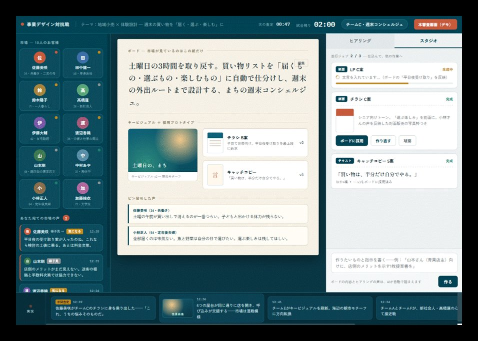
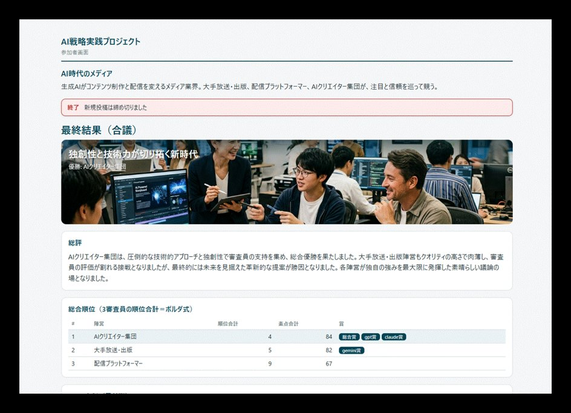

「AIを使う」から、
「AI前提で事業戦略を作る」へ。
事業を動かす方々のための、AI戦略実装の「型」を月次で作り、動かす実践の場です。各回、戦略上の問いから出発し、AIを組み込んで動く仕組みを作り、自社・自業界の競争前提がどう書き換わるかまで踏み込みます。
{kind=link}

- 📄 第2回ダイジェストを公開中
- 🗓 月次テーマを見る
- ✉️ 開催案内をメールで受け取る
「便利に使う」の、その先へ。
生成AIの普及で「ツールとして便利に使う」用途は急速に広がっています。本プロジェクトが狙うのはその先——AIを前提に、事業戦略そのものを構想し、実装するへの転換です。
1990年代、世界を変えたのは「インターネットの使い方講座」ではなく、ネット前提で作られたAmazonやNetflixのようなサービスでした。同じ問いに、いま私たちはAIで直面しています。
抽象論で終わらせません。毎回みずから手を動かし、動くものを作り、その戦略インパクトを体感する。AIの進化に合わせて、月次で更新し続ける場です。各回は独立したテーマで、途中からの参加も歓迎します。
問いから始め、作り、戦略に戻す。
各回は「戦略的な問いから出発し、手を動かして仕組みを作り、戦略インパクトを考える」一貫した流れで進みます（約2〜2.5時間＋交流タイム）。
戦略的な問いから始める
その回のテーマがなぜ戦略的に重要かを、自分の事業・業界の文脈で言語化。AIにも同じ問いを解かせ、比較します（Why before How）。
手を動かして、動く仕組みを作る
AIとの対話から、コード・コンテンツ・アプリへと段階的に発展。プログラミング経験は前提としません。各自の事業文脈に合わせて動的に組み立てます。
戦略視座に立ち戻る
作ったものを自社にどう適用し、産業・組織構造の転換にどう効くかまで視野を広げます。便利使いで終わらせません。
{kind=link}

各回のあとに、手元に残るもの。
多忙な方が録画・資料での参加でも、各自のタイミングでAI操作を追体験できるよう設計しています。
一度きりの講座では、ない。
参加者向けコミュニティ（Circle）で、過去回のアーカイブ、AI戦略関連ニュースの解説、参加者同士のディスカッションが続きます。AI時代の戦略の引き出しを、継続して積み重ねる場です。
続く場について
合わなければ、いつでも、費用ゼロで離れられる。
申込月の回は無料
お申し込みいただいた当月のセッションは費用がかかりません。
いつでも自分で解約
課金日（毎月15日）の前日までに解約すれば、その月は¥0。
早期参加枠は据え置き
先に申し込んだ方の月額は当面そのまま。後からの割引は段階的に縮小予定。

栗山 実 ／ Minoru Kuriyama
株式会社アンテカニス 代表取締役。多摩大学大学院特任教授、グロービス経営大学院教員。マッキンゼー・アンド・カンパニーで戦略コンサルティングに従事後、独立。AI・データ戦略の企業助言、人材育成、スタートアップの事業創造・経営に携わる。東京大学理学部物理学科卒・同大学院修士課程修了。